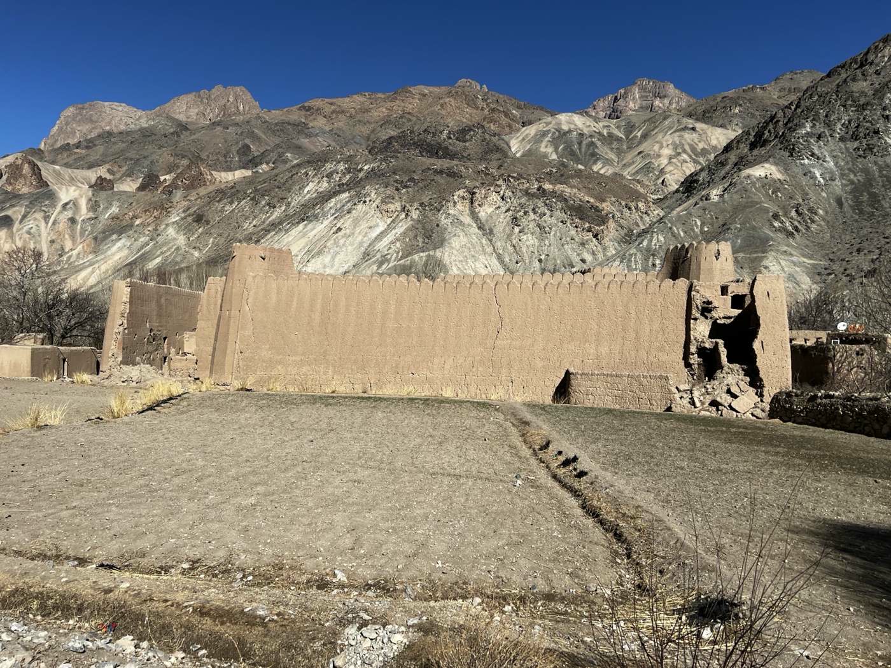

Lakhshom Qala · Bulula, Bamyan
Locally known as the Fortress of the Ismailis. The record includes field photographs, a banknote image and the historical reference to Kala Bulola.
View the fortress recordExplore historical places, biographies, local accounts and memorial records held by HSKRC.

Locally known as the Fortress of the Ismailis. The record includes field photographs, a banknote image and the historical reference to Kala Bulola.
View the fortress recordKamal Barlas reports a very old fort behind the shrine in Shanbal that resembles Lakhshom Qala. Its construction date and any historical connection to Lakhshom Qala remain undocumented.
Read the recorded local accountBiographical and literary record.
Read the biographyMemorial source and the profile of Colonel Shad Mohammad.
View the memorial sourceInclude the place, the date if known, the photographer or narrator, and any permission to publish.
Contact HSKRCMilitary commander and former governor of Baghlan.